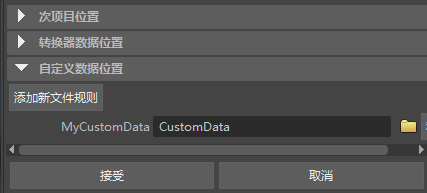

通过添加新文件规则可以为项目创建位置。可以使用自定义位置来存储数据，例如从和 Maya 一起使用的第三方插件生成的数据。自定义数据位置可能还包含各种无法确定类别的文件规则。例如，与当前未加载的转换器插件相关联的规则将显示在“自定义数据位置”(Custom Data Locations)之中。关联的插件加载后，这些插件将正确分类为转换器数据位置。
创建自定义数据位置
- 在“项目窗口”(Project Window)，单击“自定义数据位置”(Custom Data Locations)。
- 单击“添加新文件规则”(Add new file rule)。
出现“输入新文件规则”(Enter New File Rule)窗口。
- 在“输入新文件规则”(Enter New File Rule)窗口，键入自定义数据文件位置的名称，然后单击“添加”(Add)。
新的自定义数据位置添加到项目中。

- 单击新的自定义数据位置右侧的浏览 图标，然后为自定义数据文件指定一个位置。
- 单击“接受”(Accept)以保存更改并关闭“项目窗口”(Project Window)。